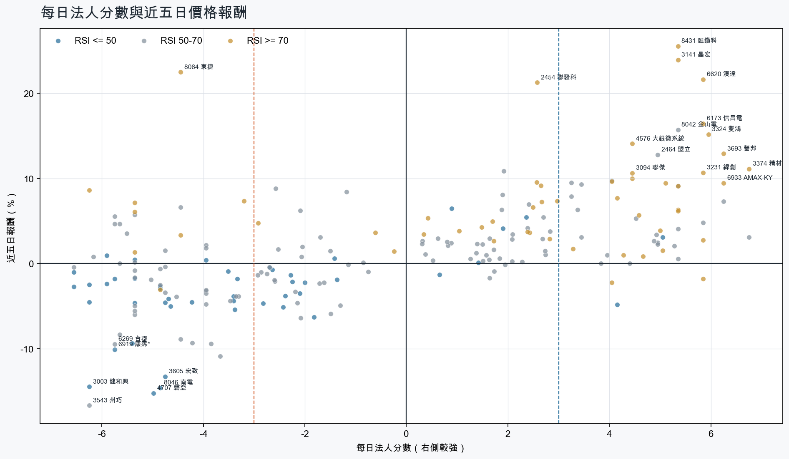
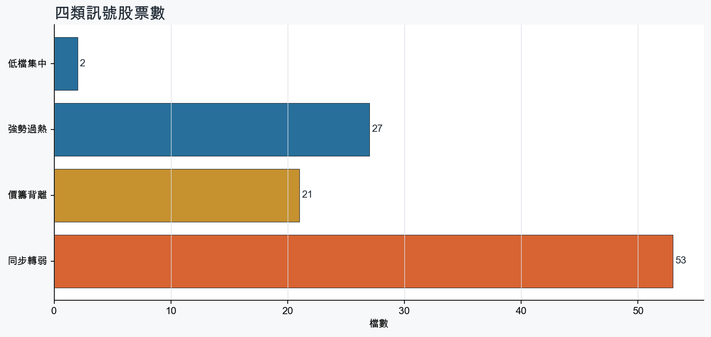
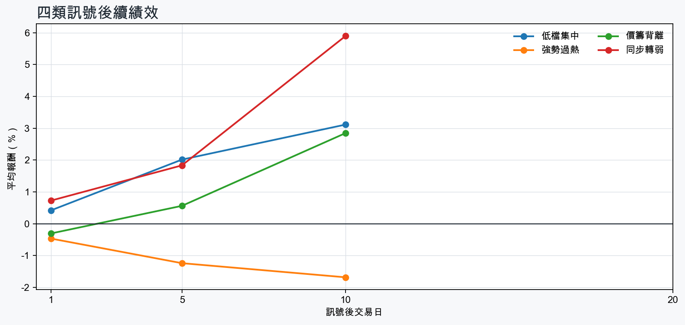

市場情緒偏多
近5日法人合計+883,618 張
篩選池上漲比例60.0%
籌碼好 / RSI低2 檔
籌碼差 / 價跌15 檔



MOOD × MONEY
情緒與籌碼雷達
熱度代表被討論程度；情緒分與法人方向分開計算。熱門不等於適合追價，樣本不足也不硬判多空。
| 股票 | 情緒 | 討論熱度 | 情緒 × 籌碼 | 情緒 × 基本面 |
|---|---|---|---|---|
| 8046 南電同步轉弱 | 中性分歧 +8.3信心 100 | 1004 篇 / 338 留言 / 3 則新聞 | 高熱分歧法人分 -4.8 | 基本面與情緒分歧基本面分 +3.6 |
| 3324 雙鴻強勢過熱 | 中性分歧 +0.0信心 87 | 771 篇 / 77 留言 / 3 則新聞 | 高熱分歧法人分 +6.0 | 基本面與情緒分歧基本面分 +3.6 |
| 6919 康霈*同步轉弱 | 情緒高漲 +55.5信心 76 | 721 篇 / 55 留言 / 3 則新聞 | 熱門但法人撤退法人分 -5.8 | 情緒領先基本面基本面分 -3.8 |
| 1815 富喬強勢過熱 | 偏多 +24.9信心 91 | 682 篇 / 34 留言 / 3 則新聞 | 情籌共振法人分 +5.8 | 基本面與情緒共振基本面分 +3.6 |
| 3714 富采強勢過熱 | 情緒高漲 +35.2信心 72 | 641 篇 / 27 留言 / 3 則新聞 | 情籌共振法人分 +5.3 | 基本面與情緒共振基本面分 +1.2 |
| 5388 中磊同步轉弱 | 偏多 +19.4信心 67 | 621 篇 / 24 留言 / 3 則新聞 | 情籌混合法人分 -6.2 | 基本面與情緒分歧基本面分 +3.0 |
| 6173 信昌電強勢過熱 | 情緒高漲 +48.9信心 63 | 591 篇 / 17 留言 / 3 則新聞 | 情籌共振法人分 +5.8 | 基本面與情緒共振基本面分 +3.6 |
| 6269 台郡同步轉弱 | 中性分歧 +0.0信心 56 | 561 篇 / 11 留言 / 3 則新聞 | 情籌混合法人分 -5.8 | 基本面與情緒分歧基本面分 -1.4 |
| 3693 營邦強勢過熱 | 偏多 +33.9信心 55 | 551 篇 / 10 留言 / 3 則新聞 | 情籌共振法人分 +6.2 | 基本面與情緒共振基本面分 +3.6 |
| 3141 晶宏強勢過熱 | 偏多 +26.8信心 39 | 531 篇 / 13 留言 / 1 則新聞 | 情籌共振法人分 +5.3 | 基本面與情緒共振基本面分 +3.6 |
| 3605 宏致同步轉弱 | 中性分歧 +9.9信心 30 | 390 篇 / 0 留言 / 3 則新聞 | 情籌混合法人分 -4.8 | 基本面與情緒分歧基本面分 +3.0 |
| 4991 環宇-KY同步轉弱 | 中性分歧 +0.0信心 30 | 390 篇 / 0 留言 / 3 則新聞 | 情籌混合法人分 -5.7 | 基本面與情緒分歧基本面分 +2.3 |
01
籌碼好 / RSI低
優先研究基本面；法人續買且價格止穩時，才適合分批觀察。
| 股票 / 確認狀態 | 每日法人分 | 浦男式近似 | 法人加速度 | RSI / 相對強弱 | 量價確認 | 融資融券 | 每週集保確認 | 基本面 | 情緒 / 情籌 | 近期消息 | 論壇討論 |
|---|---|---|---|---|---|---|---|---|---|---|---|
| 5483 中美晶等待確認 · 84 分籌碼有訊號，但價格尚未確認 | +5.0法人 +11,096 張 / 4 天 | 接近 · 75站上月線；法人籌碼偏多；法人買盤加速；留意中期均線未翻多、量能異常 | +9,502 張近3日 +7,610 / 連續 +3 日 | 48.9相對大盤 +2.9% | 量比 0.50確認分 +2.420日線低於60日線；成交量不足 | -0.2%融資 -43 張 / 融券 -5 張 | -3.31 pp1000張 -3.23 pp | 單月營收年增 +27.7%；累計營收年增 +5.4%；上半年 EPS 5.02仍需觀察下一期財報延續性來源：公開資訊觀測站 | 樣本不足 +0.0熱度 0 / 信心 0情緒樣本不足 | 近期沒有通過股票語境篩選的新聞 | 近期沒有明確提及本股的論壇樣本 |
| 3042 晶技等待確認 · 41 分籌碼有訊號，但價格尚未確認 | +4.2法人 +6,782 張 / 3 天 | 未命中 · 48法人籌碼偏多；買超具延續性；基本面有支撐；留意未站月線、中期均線未翻多 | -8,831 張近3日 +1,287 / 連續 +1 日 | 48.3相對大盤 -7.5% | 量比 0.52確認分 -5.6收盤跌破20日線；20日線低於60日線；近20日弱於大盤；成交量不足；法人買盤減速 | -2.2%融資 -281 張 / 融券 -17 張 | -2.70 pp1000張 -2.28 pp | 單月營收年增 +22.9%；累計營收年增 +9.9%；上半年 EPS 2.96仍需觀察下一期財報延續性來源：公開資訊觀測站 | 樣本不足 +0.0熱度 0 / 信心 0情緒樣本不足 | 近期沒有通過股票語境篩選的新聞 | 近期沒有明確提及本股的論壇樣本 |
02
籌碼好 / RSI高
趨勢強但不追價，等待量縮、RSI降溫或回測支撐。
| 股票 / 確認狀態 | 每日法人分 | 浦男式近似 | 法人加速度 | RSI / 相對強弱 | 量價確認 | 融資融券 | 每週集保確認 | 基本面 | 情緒 / 情籌 | 近期消息 | 論壇討論 |
|---|---|---|---|---|---|---|---|---|---|---|---|
| 1815 富喬等待拉回 · 100 分等拉回，不追價 | +5.8法人 +41,340 張 / 4 天 | 命中 · 96站上月線；中期均線偏多；法人籌碼偏多；留意動能位置非最佳 | +21,691 張近3日 +30,520 / 連續 +3 日 | 74.2相對大盤 +40.6% | 量比 1.07確認分 +5.9融資單日增幅偏高 | +5.1%融資 +2,124 張 / 融券 +0 張 | +22.20 pp1000張 +21.31 pp | 單月營收年增 +68.1%；累計營收年增 +46.9%；上半年 EPS 2.24仍需觀察下一期財報延續性來源：公開資訊觀測站 | 偏多 +24.9熱度 68 / 信心 91情籌共振 | 今日漲停股｜半導體與PCB 高頻材料強勢領軍，聯電、富喬、台虹爆量攻上漲停0907｜豐雲學堂2026 年 09 月sinotrade.com.tw · 09/07PCB紅通通！「這檔」連2紅挾富喬等3檔漲停 金像電一度亮燈、臻鼎大漲8.21%Yahoo股市 · 09/07 | [新聞] 焦點股》富喬：急拉創天價 獲利了結出籠PTT Stock · 09-04 · 19 留言[新聞] PCB紅通通！「這檔」連2紅挾富喬等3檔漲PTT Stock · 09-07 · 15 留言 |
| 3693 營邦等待拉回 · 100 分等拉回，不追價 | +6.2法人 +2,363 張 / 5 天 | 接近 · 90站上月線；中期均線偏多；法人籌碼偏多；留意RSI過熱 | +196 張近3日 +1,409 / 連續 +10 日 | 90.8相對大盤 +31.1% | 量比 1.80確認分 +6.5價格、量能與籌碼未見明顯弱項 | -1.7%融資 -73 張 / 融券 +19 張 | +5.23 pp1000張 +2.90 pp | 單月營收年增 +148.9%；累計營收年增 +11.1%；上半年 EPS 8.66仍需觀察下一期財報延續性來源：公開資訊觀測站 | 偏多 +33.9熱度 55 / 信心 55情籌共振 | 營邦（3693）做什麼？首登GTC 盛會，從機殼廠到AI儲存平台的蛻變，同業還有哪些競爭者？｜股市話題sinotrade.com.tw · 08/21【2026/08月營收公告】營邦(3693) 八月營收12.67億元，表現亮眼、呈現雙成長，年增171.01％CMoney · 09/07 | [情報] 3693 營邦 115年8月營收PTT Stock · 09-07 · 10 留言 |
| 3406 玉晶光等待拉回 · 98 分等拉回，不追價 | +5.8法人 +3,317 張 / 4 天 | 接近 · 79站上月線；中期均線偏多；法人籌碼偏多；留意法人買盤未加速、量能異常 | -3,282 張近3日 +575 / 連續 -1 日 | 74.1相對大盤 +75.4% | 量比 0.41確認分 +1.8成交量不足；法人買盤減速 | -3.8%融資 -141 張 / 融券 -46 張 | +6.80 pp1000張 +8.36 pp | 單月營收年增 +1.6%；累計營收年增 +14.2%；上半年 EPS 13.99仍需觀察下一期財報延續性來源：公開資訊觀測站 | 中性分歧 +0.0熱度 39 / 信心 30情籌混合 | 玉晶光8月合併營收月增12% 技嘉增7.2%UDN · 09/08玉晶光8月營收27.19億元改寫35個月來新高 年增0.72%news.cnyes.com · 09/07 | 近期沒有明確提及本股的論壇樣本 |
| 3324 雙鴻等待拉回 · 97 分等拉回，不追價 | +6.0法人 +3,369 張 / 5 天 | 接近 · 73站上月線；中期均線偏多；法人籌碼偏多；留意法人買盤未加速、量能異常 | -6,249 張近3日 +189 / 連續 +8 日 | 78.9相對大盤 +37.2% | 量比 0.55確認分 +1.1成交量不足；法人買盤減速 | +2.7%融資 +168 張 / 融券 +86 張 | +11.78 pp1000張 +6.08 pp | 單月營收年增 +116.7%；累計營收年增 +83.3%；上半年 EPS 23.01仍需觀察下一期財報延續性來源：公開資訊觀測站 | 中性分歧 +0.0熱度 77 / 信心 87高熱分歧 | 2飆股「抓去關」 散熱業雙鴻明起處置到9／14ETtoday財經雲 · 09/07《台北股市》注意股：8日36檔信驊.聯發科.雙鴻.精測.台耀.尖點等- 上市櫃旺得富理財網 · 09/08 | [情報] 3324 雙鴻 自結7月EPS 6.47PTT Stock · 09-03 · 77 留言 |
| 2617 台航等待拉回 · 100 分等拉回，不追價 | +5.3法人 +4,392 張 / 4 天 | 命中 · 96站上月線；中期均線偏多；法人籌碼偏多；留意動能位置非最佳 | +3,279 張近3日 +4,125 / 連續 +4 日 | 72.3相對大盤 +7.0% | 量比 1.51確認分 +6.2價格、量能與籌碼未見明顯弱項 | +1.4%融資 +35 張 / 融券 +0 張 | +1.01 pp1000張 +0.62 pp | 單月營收年增 +34.1%；累計營收年增 +18.5%；上半年 EPS 1.55仍需觀察下一期財報延續性來源：公開資訊觀測站 | 樣本不足 +0.0熱度 0 / 信心 0情緒樣本不足 | 近期沒有通過股票語境篩選的新聞 | 近期沒有明確提及本股的論壇樣本 |
| 5443 均豪等待拉回 · 100 分等拉回，不追價 | +5.3法人 +1,880 張 / 4 天 | 命中 · 91站上月線；中期均線偏多；法人籌碼偏多；留意量能尚未確認、動能位置非最佳 | +4,764 張近3日 +2,990 / 連續 +4 日 | 70.8相對大盤 +9.5% | 量比 2.85確認分 +5.8價格、量能與籌碼未見明顯弱項 | +0.6%融資 +29 張 / 融券 +73 張 | +1.21 pp1000張 +0.60 pp | 單月營收年增 +165.6%；累計營收年增 +22.4%；上半年 EPS 1.27上半年營益率 5.9%來源：公開資訊觀測站 | 樣本不足 +9.9熱度 23 / 信心 10情緒樣本不足 | 【11:05 即時新聞】均豪(5443)股價勁揚逾6%，受惠AI先進封裝擴產題材發酵＋站穩百元上方多頭結構延續CMoney投資網誌 · 09/07 | 近期沒有明確提及本股的論壇樣本 |
| 3374 精材等待拉回 · 98 分等拉回，不追價 | +6.8法人 +6,704 張 / 5 天 | 接近 · 73站上月線；中期均線偏多；法人籌碼偏多；留意法人買盤未加速、量能異常 | -9,378 張近3日 +2,728 / 連續 +10 日 | 85.3相對大盤 +34.0% | 量比 0.28確認分 +1.1成交量不足；法人買盤減速 | +2.5%融資 +724 張 / 融券 +42 張 | +3.86 pp1000張 +2.41 pp | 單月營收年增 +31.0%；累計營收年增 +32.6%；上半年 EPS 2.88仍需觀察下一期財報延續性來源：公開資訊觀測站 | 中性分歧 +0.0熱度 39 / 信心 30情籌混合 | 全模態AI引爆感測需求！精材、同欣電一度漲停，瑞昱成IC設計最大贏家，但為何這檔要當心？ | 個人理財 | 理財經濟日報 · 09/059/7台股交易回顧｜精材(3374)漲勢驚人-林恩如CMoney投資網誌 · 09/07 | 近期沒有明確提及本股的論壇樣本 |
| 6933 AMAX-KY等待拉回 · 95 分等拉回，不追價 | +6.2法人 +1,661 張 / 5 天 | 接近 · 73站上月線；中期均線偏多；法人籌碼偏多；留意法人買盤未加速、量能異常 | -1,937 張近3日 +162 / 連續 +7 日 | 79.7相對大盤 +68.1% | 量比 0.39確認分 +1.1成交量不足；法人買盤減速 | -0.9%融資 -17 張 / 融券 -61 張 | +5.47 pp1000張 -0.50 pp | 單月營收年增 +197.4%；累計營收年增 +36.6%；上半年 EPS 6.43仍需觀察下一期財報延續性來源：公開資訊觀測站 | 中性分歧 +0.0熱度 33 / 信心 20情籌混合 | 短線波動太劇烈！欣興6日崩近26%、AMAX-KY卻狂飆31%…「這檔」本益比129倍 16檔熱門注意股出爐Yahoo股市 · 09/07【09/07處置股公告】AMAX-KY(6933) 09/07到09/11列入處置股，採2分盤交易-CMoney 小編CMoney投資網誌 · 09/07 | 近期沒有明確提及本股的論壇樣本 |
| 3141 晶宏等待拉回 · 100 分等拉回，不追價 | +5.3法人 +3,274 張 / 4 天 | 接近 · 83站上月線；中期均線偏多；法人籌碼偏多；留意法人買盤未加速、RSI過熱 | -941 張近3日 +1,883 / 連續 +1 日 | 91.9相對大盤 +22.2% | 量比 1.96確認分 +3.1法人買盤減速 | -7.0%融資 -530 張 / 融券 -122 張 | +12.67 pp1000張 +12.37 pp | 單月營收年增 +39.6%；累計營收年增 +16.0%；上半年 EPS 2.19仍需觀察下一期財報延續性來源：公開資訊觀測站 | 偏多 +26.8熱度 53 / 信心 39情籌共振 | 《半導體》注意股：晶宏 近5日漲23.94%富聯網 · 09/08 | [情報] 3141 晶宏 8月營收 M:12.27% Y:79.77%PTT Stock · 09-03 · 13 留言 |
| 6173 信昌電等待拉回 · 100 分等拉回，不追價 | +5.8法人 +2,640 張 / 4 天 | 接近 · 81站上月線；法人籌碼偏多；法人買盤加速；留意中期均線未翻多、量能尚未確認 | +1,724 張近3日 +1,616 / 連續 +3 日 | 75.6相對大盤 +64.7% | 量比 0.69確認分 +6.320日線低於60日線 | -2.7%融資 -265 張 / 融券 +281 張 | -0.44 pp1000張 -2.04 pp | 單月營收年增 +47.9%；累計營收年增 +22.0%；上半年 EPS 2.98仍需觀察下一期財報延續性來源：公開資訊觀測站 | 情緒高漲 +48.9熱度 59 / 信心 63情籌共振 | 信昌電8月營收5.52 億元TechNews 科技新報 · 09/07被動元件繼續噴！「指標廠」連拉2根攜信昌電、金山電漲停 華新科一度亮燈、國巨漲近5%Yahoo股市 · 09/07 | [情報] 6173 信昌電 8月營收PTT Stock · 09-07 · 17 留言 |
| 3231 緯創等待拉回 · 100 分等拉回，不追價 | +5.8法人 +54,550 張 / 4 天 | 接近 · 81站上月線；中期均線偏多；法人籌碼偏多；留意明顯弱於大盤、動能位置非最佳 | +24,835 張近3日 +38,081 / 連續 -1 日 | 70.5相對大盤 -3.3% | 量比 1.33確認分 +3.7近20日弱於大盤 | +2.4%融資 +1,153 張 / 融券 +65 張 | +0.49 pp1000張 +0.36 pp | 單月營收年增 +60.8%；累計營收年增 +88.2%；上半年 EPS 7.78上半年營益率 3.6%來源：公開資訊觀測站 | 偏多 +29.7熱度 39 / 信心 30情籌共振 | 緯創、信邦目標價法人喊高- 日報工商時報 · 09/08目標價上看277.5元、今年EPS最高估18.14元！緯創AI伺服器出貨動能旺到Q4 八大公股砸4.3億元加碼Yahoo股市 · 09/08 | 近期沒有明確提及本股的論壇樣本 |
| 6271 同欣電等待拉回 · 100 分等拉回，不追價 | +4.0法人 +4,275 張 / 2 天 | 接近 · 81站上月線；法人籌碼偏多；法人買盤加速；留意中期均線未翻多、買超延續不足 | +414 張近3日 +2,029 / 連續 -1 日 | 70.3相對大盤 +12.7% | 量比 2.29確認分 +7.120日線低於60日線 | -7.4%融資 -534 張 / 融券 -60 張 | -0.50 pp1000張 +1.24 pp | 單月營收年增 +22.4%；累計營收年增 +4.5%；上半年 EPS 4.37仍需觀察下一期財報延續性來源：公開資訊觀測站 | 中性分歧 +0.0熱度 33 / 信心 20情籌混合 | 全模態AI引爆感測需求！精材、同欣電一度漲停，瑞昱成IC設計最大贏家，但為何這檔要當心？ | 個人理財 | 理財經濟日報 · 09/05光通訊題材升溫！同欣電(6271)股價攻上漲停！-CMoney官方CMoney投資網誌 · 09/07 | 近期沒有明確提及本股的論壇樣本 |
| 3094 聯傑等待拉回 · 100 分等拉回，不追價 | +4.5法人 +2,910 張 / 3 天 | 接近 · 80站上月線；中期均線偏多；法人籌碼偏多；留意量能異常、RSI過熱 | +5,117 張近3日 +4,228 / 連續 +3 日 | 80.1相對大盤 +15.9% | 量比 4.04確認分 +6.0價格、量能與籌碼未見明顯弱項 | -13.9%融資 -806 張 / 融券 -199 張 | +1.36 pp1000張 -0.36 pp | 單月營收年增 +32.1%；累計營收年增 +15.3%；上半年 EPS 0.39仍需觀察下一期財報延續性來源：公開資訊觀測站 | 樣本不足 +0.0熱度 0 / 信心 0情緒樣本不足 | 近期沒有通過股票語境篩選的新聞 | 近期沒有明確提及本股的論壇樣本 |
| 6218 豪勉等待拉回 · 90 分等拉回，不追價 | +4.5法人 +1,950 張 / 3 天 | 命中 · 89站上月線；中期均線偏多；法人籌碼偏多；留意法人買盤未加速、動能位置非最佳 | -1,065 張近3日 +385 / 連續 +1 日 | 76.2相對大盤 +18.1% | 量比 1.93確認分 +1.9法人買盤減速；融資單日增幅偏高 | +15.3%融資 +226 張 / 融券 +4 張 | +3.38 pp1000張 +1.69 pp | 單月營收年增 +34.2%；累計營收年增 +13.1%；上半年 EPS 2.41上半年營益率 6.6%來源：公開資訊觀測站 | 樣本不足 +9.9熱度 23 / 信心 10情緒樣本不足 | 【10:51 即時新聞】豪勉(6218)股價勁揚站上45元上方，受惠營收成長與主力偏多點火＋均線多頭排列推升多方氣勢CMoney投資網誌 · 09/07 | 近期沒有明確提及本股的論壇樣本 |
| 3714 富采等待拉回 · 100 分等拉回，不追價 | +5.3法人 +10,980 張 / 4 天 | 接近 · 86站上月線；中期均線偏多；法人籌碼偏多；留意RSI過熱 | +7,622 張近3日 +9,048 / 連續 -1 日 | 79.8相對大盤 +8.6% | 量比 2.09確認分 +6.5價格、量能與籌碼未見明顯弱項 | +1.5%融資 +383 張 / 融券 +19 張 | +0.99 pp1000張 +1.00 pp | 單月營收年增 +24.9%；累計營收年增 +5.1%；上半年 EPS 1.49上半年營益率 -5.9%來源：公開資訊觀測站 | 情緒高漲 +35.2熱度 64 / 信心 72情籌共振 | 富采營收／8月21.72億元、年增14.23% 前八月年增6.22%UDN · 09/073714 富采- 股市最新爆料，掌握股友們對眾個股股價、技術分析、新聞的第一手... - 股市爆料同學會CMoney · 09/07 | [新聞]鼎元12年來首度現增拚光通訊 大股東富采跟PTT Stock · 09-04 · 27 留言 |
03
籌碼差 / 股價上漲
可能是事件行情或軋空；沒有籌碼改善前避免追高。
| 股票 / 確認狀態 | 每日法人分 | 浦男式近似 | 法人加速度 | RSI / 相對強弱 | 量價確認 | 融資融券 | 每週集保確認 | 基本面 | 情緒 / 情籌 | 近期消息 | 論壇討論 |
|---|---|---|---|---|---|---|---|---|---|---|---|
| 8064 東捷風險警示 · 38 分背離警戒，避免追高 | -4.5法人 -2,618 張 / 2 天 | 未命中 · 43站上月線；明顯強於大盤；流動性足夠；留意中期均線未翻多、法人籌碼偏弱 | -1,493 張近3日 -2,195 / 連續 -1 日 | 77.3相對大盤 +15.9% | 量比 4.38確認分 +0.820日線低於60日線；法人買盤減速；融資單日增幅偏高 | +13.1%融資 +980 張 / 融券 +9 張 | -0.40 pp1000張 +0.62 pp | 累計營收年增 +7.7%；上半年 EPS 0.52單月營收年增 -40.7%；上半年營益率 5.2%來源：公開資訊觀測站 | 偏多 +29.7熱度 39 / 信心 30熱門但法人撤退 | 【09:10 即時新聞】東捷(8064)亮燈漲停134.5元，基本面由虧轉盈帶動買盤追價＋股價站穩中長期均線、多方結構強化CMoney投資網誌 · 09/08【11:59 即時新聞】東捷(8064)股價上漲逾5%，延續面板與先進封裝裝置題材＋前一日主力與三大法人同步加碼支撐多方結構CMoney投資網誌 · 09/07 | 近期沒有明確提及本股的論壇樣本 |
| 0055 元大MSCI金融風險警示 · 24 分背離警戒，避免追高 | -6.2法人 -1,980 張 / 0 天 | 未命中 · 47站上月線；中期均線偏多；明顯強於大盤；留意法人籌碼偏弱、法人買盤未加速 | -1,557 張近3日 -1,857 / 連續 -6 日 | 82.8相對大盤 +6.3% | 量比 2.51確認分 +0.7法人買盤減速；融資單日增幅偏高；流動性偏低 | +7.7%融資 +13 張 / 融券 +0 張 | -2.03 pp1000張 -2.80 pp | 尚無明確成長訊號仍需觀察下一期財報延續性來源：公開資訊觀測站 | 樣本不足 +0.0熱度 0 / 信心 0情緒樣本不足 | 近期沒有通過股票語境篩選的新聞 | 近期沒有明確提及本股的論壇樣本 |
| 8996 高力風險警示 · 39 分背離警戒，避免追高 | -5.8法人 -3,120 張 / 0 天 | 接近 · 65站上月線；明顯強於大盤；量價健康；留意中期均線未翻多、法人籌碼偏弱 | -1,436 張近3日 -2,594 / 連續 -10 日 | 53.9相對大盤 +10.0% | 量比 2.28確認分 +1.920日線低於60日線；法人買盤減速；融資單日增幅偏高 | +11.4%融資 +780 張 / 融券 -23 張 | -2.53 pp1000張 -6.00 pp | 單月營收年增 +57.6%；累計營收年增 +115.4%；上半年 EPS 8.69仍需觀察下一期財報延續性來源：公開資訊觀測站 | 中性分歧 +0.0熱度 39 / 信心 30情籌混合 | 《電機股》注意股：高力 近5日漲5.53%富聯網 · 09/088996 高力- 股市最新爆料，掌握股友們對眾個股股價、技術分析、新聞的第一手... - 股市爆料同學會CMoney · 09/07 | 近期沒有明確提及本股的論壇樣本 |
| 4526 東台風險警示 · 20 分背離警戒，避免追高 | -5.3法人 -6,687 張 / 1 天 | 未命中 · 41站上月線；相對大盤偏強；量價健康；留意中期均線未翻多、法人籌碼偏弱 | -6,529 張近3日 -6,686 / 連續 -3 日 | 75.9相對大盤 +1.1% | 量比 2.34確認分 -0.720日線低於60日線；法人買盤減速 | +2.0%融資 +121 張 / 融券 +30 張 | -1.70 pp1000張 -1.16 pp | 單月營收年增 +57.1%；累計營收年增 +1.8%上半年 EPS -1.02；上半年營益率 -9.8%來源：公開資訊觀測站 | 樣本不足 +0.0熱度 0 / 信心 0情緒樣本不足 | 近期沒有通過股票語境篩選的新聞 | 近期沒有明確提及本股的論壇樣本 |
| 6207 雷科風險警示 · 29 分背離警戒，避免追高 | -4.5法人 -2,468 張 / 2 天 | 未命中 · 50站上月線；量價健康；基本面偏正向；留意中期均線未翻多、法人籌碼偏弱 | -823 張近3日 -1,940 / 連續 -1 日 | 61.3相對大盤 -0.2% | 量比 1.37確認分 -1.120日線低於60日線；法人買盤減速 | +1.6%融資 +86 張 / 融券 +27 張 | -1.76 pp1000張 -0.62 pp | 單月營收年增 +6.3%；累計營收年增 +4.2%；上半年 EPS 1.11上半年營益率 5.7%來源：公開資訊觀測站 | 樣本不足 +9.9熱度 23 / 信心 10情緒樣本不足 | 【09:15 即時新聞】雷科(6207)股價漲逾8%，先進封裝自製設備訂單與營收成長帶動買盤，技術面站穩中長期均線、法人成本線之上CMoney投資網誌 · 09/08 | 近期沒有明確提及本股的論壇樣本 |
| 6669 緯穎風險警示 · 60 分背離警戒，避免追高 | -5.8法人 -8,199 張 / 0 天 | 接近 · 82站上月線；中期均線偏多；法人買盤加速；留意法人籌碼偏弱、買超延續不足 | +755 張近3日 -3,871 / 連續 -6 日 | 68.3相對大盤 +18.2% | 量比 1.00確認分 +5.9融資單日增幅偏高 | +11.3%融資 +260 張 / 融券 +84 張 | -2.76 pp1000張 -1.02 pp | 單月營收年增 +39.2%；累計營收年增 +41.3%；上半年 EPS 156.38上半年營益率 6.8%來源：公開資訊觀測站 | 中性分歧 +0.0熱度 39 / 信心 30情籌混合 | 零股榜大洗牌！緯穎1張變3張衝前三欣興暴跌近19％反升榜小股東在忙什麼？ - 上市櫃旺得富理財網 · 09/05緯穎做什麼的？AI伺服器訂單旺到廠房「翻倍都不夠」，微軟、Meta找上門數位時代 · 09/03 | 近期沒有明確提及本股的論壇樣本 |
| 4977 眾達-KY風險警示 · 40 分背離警戒，避免追高 | -5.3法人 -2,039 張 / 1 天 | 接近 · 67站上月線；中期均線偏多；明顯強於大盤；留意法人籌碼偏弱、法人買盤未加速 | -915 張近3日 -1,642 / 連續 -2 日 | 65.0相對大盤 +18.9% | 量比 0.95確認分 +2.5法人買盤減速 | +2.3%融資 +154 張 / 融券 -43 張 | -0.20 pp1000張 -2.30 pp | 單月營收年增 +136.6%；上半年 EPS 1.50累計營收年增 -1.4%；上半年營益率 -6.8%來源：公開資訊觀測站 | 樣本不足 +9.9熱度 23 / 信心 10情緒樣本不足 | 【09/07現金增資公告】眾達-KY(4977) 將進行現金增資8.3千萬元-CMoney 小編CMoney投資網誌 · 09/07 | 近期沒有明確提及本股的論壇樣本 |
| 8111 立碁風險警示 · 44 分背離警戒，避免追高 | -5.3法人 -2,200 張 / 1 天 | 未命中 · 56站上月線；中期均線偏多；明顯強於大盤；留意法人籌碼偏弱、法人買盤未加速 | -6,606 張近3日 -2,676 / 連續 -3 日 | 71.4相對大盤 +20.9% | 量比 1.40確認分 +2.5法人買盤減速 | +3.1%融資 +345 張 / 融券 +26 張 | +2.82 pp1000張 +1.76 pp | 上半年 EPS 0.43單月營收年增 -20.9%；累計營收年增 -5.7%；上半年營益率 1.0%來源：公開資訊觀測站 | 中性分歧 +0.0熱度 39 / 信心 30情籌混合 | 【2026/08月營收公告】立碁(8111) 八月營收創近2個月以來新高，月增11.6％CMoney · 09/07〈熱門股〉立碁矽光子1.6T模組拚Q4出貨 外資買盤力挺周漲17%news.cnyes.com · 08/22 | 近期沒有明確提及本股的論壇樣本 |
| 2419 仲琦風險警示 · 43 分背離警戒，避免追高 | -3.2法人 -2,209 張 / 2 天 | 未命中 · 48站上月線；相對大盤偏強；量價健康；留意中期均線未翻多、法人籌碼偏弱 | -3,364 張近3日 -2,784 / 連續 -3 日 | 72.1相對大盤 +2.7% | 量比 1.29確認分 +1.220日線低於60日線；法人買盤減速 | -1.8%融資 -108 張 / 融券 -4 張 | -0.22 pp1000張 -0.36 pp | 上半年 EPS 0.14單月營收年增 -3.8%；累計營收年增 -3.9%；上半年營益率 1.5%來源：公開資訊觀測站 | 樣本不足 +0.0熱度 0 / 信心 0情緒樣本不足 | 近期沒有通過股票語境篩選的新聞 | 近期沒有明確提及本股的論壇樣本 |
| 2481 強茂風險警示 · 67 分背離警戒，避免追高 | -5.7法人 -9,204 張 / 1 天 | 接近 · 72站上月線；法人買盤加速；明顯強於大盤；留意中期均線未翻多、法人籌碼偏弱 | +17,529 張近3日 +1,440 / 連續 -2 日 | 63.7相對大盤 +9.6% | 量比 1.83確認分 +6.520日線低於60日線 | +4.4%融資 +698 張 / 融券 +91 張 | -0.67 pp1000張 -1.16 pp | 單月營收年增 +31.0%；累計營收年增 +16.5%；上半年 EPS 2.03仍需觀察下一期財報延續性來源：公開資訊觀測站 | 偏多 +29.7熱度 39 / 信心 30熱門但法人撤退 | 強茂榮獲2026外資精選台灣企業100強肯定mem.com.tw · 09/072481 強茂- 股市最新爆料，掌握股友們對眾個股股價、技術分析、新聞的第一手... - 股市爆料同學會CMoney · 09/07 | 近期沒有明確提及本股的論壇樣本 |
| 3596 智易風險警示 · 15 分背離警戒，避免追高 | -5.9法人 -2,010 張 / 0 天 | 未命中 · 29法人買盤加速；基本面偏正向；流動性足夠；留意未站月線、中期均線未翻多 | +491 張近3日 -1,330 / 連續 -10 日 | 44.4相對大盤 -13.7% | 量比 0.36確認分 -1.8收盤跌破20日線；20日線低於60日線；近20日弱於大盤；成交量不足 | -2.2%融資 -45 張 / 融券 +3 張 | -5.06 pp1000張 -3.08 pp | 單月營收年增 +7.7%；累計營收年增 +2.8%；上半年 EPS 6.50上半年營益率 6.6%來源：公開資訊觀測站 | 樣本不足 +0.0熱度 23 / 信心 10情緒樣本不足 | 智易8月營收月減2.4%TechNews 科技新報 · 09/07 | 近期沒有明確提及本股的論壇樣本 |
| 6257 矽格風險警示 · 43 分背離警戒，避免追高 | -4.0法人 -8,819 張 / 2 天 | 未命中 · 56站上月線；法人買盤加速；基本面有支撐；留意中期均線未翻多、法人籌碼偏弱 | +4,071 張近3日 -5,364 / 連續 +1 日 | 60.6相對大盤 -2.7% | 量比 0.65確認分 +1.620日線低於60日線 | -0.8%融資 -107 張 / 融券 +0 張 | -4.48 pp1000張 -5.08 pp | 單月營收年增 +26.6%；累計營收年增 +19.3%；上半年 EPS 4.65仍需觀察下一期財報延續性來源：公開資訊觀測站 | 偏多 +29.7熱度 39 / 信心 30熱門但法人撤退 | AI封測火力全開力成、京元電、矽格8月營收年月雙增「這家」面板級封裝產能已被包下- 日報工商時報 · 09/08矽格單月營收持續突破20億元 續創新高UDN · 09/07 | 近期沒有明確提及本股的論壇樣本 |
| 2201 裕隆風險警示 · 39 分背離警戒，避免追高 | -5.5法人 -10,071 張 / 0 天 | 接近 · 67站上月線；中期均線偏多；明顯強於大盤；留意法人籌碼偏弱、法人買盤未加速 | -3,146 張近3日 -5,617 / 連續 -5 日 | 68.6相對大盤 +6.5% | 量比 0.95確認分 +2.1法人買盤減速 | +1.2%融資 +127 張 / 融券 +1 張 | -0.17 pp1000張 +0.02 pp | 上半年 EPS 0.50；上半年營益率 9.7%單月營收年增 -3.9%；累計營收年增 -3.7%來源：公開資訊觀測站 | 樣本不足 +0.0熱度 0 / 信心 0情緒樣本不足 | 近期沒有通過股票語境篩選的新聞 | 近期沒有明確提及本股的論壇樣本 |
| 2442 新美齊風險警示 · 16 分背離警戒，避免追高 | -6.2法人 -3,187 張 / 0 天 | 未命中 · 45中期均線偏多；基本面有支撐；動能強但未過熱；留意未站月線、法人籌碼偏弱 | -700 張近3日 -2,274 / 連續 -8 日 | 54.3相對大盤 -6.3% | 量比 2.61確認分 -3.2收盤跌破20日線；近20日弱於大盤；法人買盤減速 | -6.5%融資 -277 張 / 融券 +0 張 | -1.55 pp1000張 -0.34 pp | 單月營收年增 +233.9%；累計營收年增 +396.7%；上半年 EPS 1.16仍需觀察下一期財報延續性來源：公開資訊觀測站 | 樣本不足 +0.0熱度 0 / 信心 0情緒樣本不足 | 近期沒有通過股票語境篩選的新聞 | 近期沒有明確提及本股的論壇樣本 |
| 6166 凌華風險警示 · 5 分背離警戒，避免追高 | -5.3法人 -2,408 張 / 1 天 | 未命中 · 36量價健康；基本面有支撐；流動性足夠；留意未站月線、中期均線未翻多 | -917 張近3日 -1,612 / 連續 -1 日 | 41.1相對大盤 -24.2% | 量比 1.38確認分 -5.6收盤跌破20日線；20日線低於60日線；近20日弱於大盤；法人買盤減速；融資單日增幅偏高 | +5.2%融資 +149 張 / 融券 -6 張 | -2.50 pp1000張 -2.00 pp | 單月營收年增 +38.2%；累計營收年增 +40.6%；上半年 EPS 3.12仍需觀察下一期財報延續性來源：公開資訊觀測站 | 中性分歧 +0.0熱度 39 / 信心 30情籌混合 | 凌華8月營收創單月新高 各主要產品線出貨動能良好鉅亨網 · 09/07營收速報 - 凌華(6166)8月營收15.29億元年增率高達47.83％｜新聞快訊｜豐雲學堂sinotrade.com.tw · 09/07 | 近期沒有明確提及本股的論壇樣本 |
04
籌碼差 / 股價下跌
籌碼與價格同弱，原則上迴避，等待法人與大戶同時回補。
| 股票 / 確認狀態 | 每日法人分 | 浦男式近似 | 法人加速度 | RSI / 相對強弱 | 量價確認 | 融資融券 | 每週集保確認 | 基本面 | 情緒 / 情籌 | 近期消息 | 論壇討論 |
|---|---|---|---|---|---|---|---|---|---|---|---|
| 3543 州巧風險警示 · 21 分迴避，等待籌碼翻正 | -6.2法人 -1,975 張 / 0 天 | 未命中 · 40中期均線偏多；明顯強於大盤；動能強但未過熱；留意未站月線、法人籌碼偏弱 | -1,056 張近3日 -954 / 連續 -5 日 | 53.1相對大盤 +12.3% | 量比 0.34確認分 -0.8收盤跌破20日線；成交量不足；法人買盤減速 | +1.5%融資 +61 張 / 融券 +6 張 | +3.14 pp1000張 +0.60 pp | 單月營收年增 +10.4%累計營收年增 -1.1%；上半年 EPS -0.54；上半年營益率 -6.2%來源：公開資訊觀測站 | 樣本不足 +0.0熱度 0 / 信心 0情緒樣本不足 | 近期沒有通過股票語境篩選的新聞 | 近期沒有明確提及本股的論壇樣本 |
| 8046 南電風險警示 · 4 分迴避，等待籌碼翻正 | -4.8法人 -7,897 張 / 1 天 | 未命中 · 30中期均線偏多；基本面有支撐；流動性足夠；留意未站月線、法人籌碼偏弱 | -5,086 張近3日 -6,444 / 連續 -1 日 | 32.1相對大盤 -12.4% | 量比 0.53確認分 -6.3收盤跌破20日線；近20日弱於大盤；成交量不足；法人買盤減速 | +1.1%融資 +121 張 / 融券 +10 張 | -1.65 pp1000張 -1.71 pp | 單月營收年增 +50.2%；累計營收年增 +39.4%；上半年 EPS 5.53仍需觀察下一期財報延續性來源：公開資訊觀測站 | 中性分歧 +8.3熱度 100 / 信心 100高熱分歧 | 南電、景碩、欣興、臻鼎...載板4雄誰跌出CP值？瑤池金母砸「2.74億元買這檔」 華星光、高力、日月光...6大主動式ETF高割離席清單曝光- 上市櫃旺得富理財網 · 09/08欣興、南電、景碩…ABF載板股能撿？外資挑它買超20天！股海老鳥拆解錯殺劇本：這檔獨特優勢曝光今周刊 · 09/08 | [情報] 8046 南電 8月營收 MOM-1.61% YOY40.59%PTT Stock · 09-03 · 183 留言[新聞]南電宣布「不漲價」股價摜跌停！PCB族群PTT Stock · 09-03 · 66 留言 |
| 4707 磐亞風險警示 · 24 分迴避，等待籌碼翻正 | -5.0法人 -2,751 張 / 0 天 | 未命中 · 38中期均線偏多；法人買盤加速；量價健康；留意未站月線、法人籌碼偏弱 | +748 張近3日 -948 / 連續 -5 日 | 37.2相對大盤 -14.6% | 量比 0.92確認分 -0.4收盤跌破20日線；近20日弱於大盤 | -3.8%融資 -562 張 / 融券 +1 張 | -0.09 pp1000張 -0.17 pp | 上半年 EPS 0.69單月營收年增 -17.0%；累計營收年增 -9.3%；上半年營益率 -4.0%來源：公開資訊觀測站 | 樣本不足 +0.0熱度 0 / 信心 0情緒樣本不足 | 近期沒有通過股票語境篩選的新聞 | 近期沒有明確提及本股的論壇樣本 |
| 3003 健和興風險警示 · 11 分迴避，等待籌碼翻正 | -6.2法人 -2,397 張 / 0 天 | 未命中 · 35中期均線偏多；基本面有支撐；流動性足夠；留意未站月線、法人籌碼偏弱 | -1,539 張近3日 -2,198 / 連續 -6 日 | 33.9相對大盤 -19.5% | 量比 2.60確認分 -5.8收盤跌破20日線；近20日弱於大盤；法人買盤減速 | +3.9%融資 +90 張 / 融券 +0 張 | +3.71 pp1000張 +2.78 pp | 單月營收年增 +93.0%；累計營收年增 +39.8%；上半年 EPS 1.46仍需觀察下一期財報延續性來源：公開資訊觀測站 | 樣本不足 +0.0熱度 0 / 信心 0情緒樣本不足 | 近期沒有通過股票語境篩選的新聞 | 近期沒有明確提及本股的論壇樣本 |
| 3605 宏致風險警示 · 51 分迴避，等待籌碼翻正 | -4.8法人 -2,851 張 / 2 天 | 接近 · 67中期均線偏多；法人買盤加速；明顯強於大盤；留意未站月線、法人籌碼偏弱 | +5,032 張近3日 +349 / 連續 -1 日 | 49.7相對大盤 +5.2% | 量比 0.77確認分 +2.5收盤跌破20日線；融資單日增幅偏高 | +7.4%融資 +1,209 張 / 融券 -441 張 | +1.11 pp1000張 +0.08 pp | 單月營收年增 +29.8%；累計營收年增 +17.2%；上半年 EPS 1.89上半年營益率 6.4%來源：公開資訊觀測站 | 中性分歧 +9.9熱度 39 / 信心 30情籌混合 | 盤中速報 - 宏致(3605)股價殺至跌停，跌停價115.0元，成交12,462張TradingView · 09/03【10:55 即時新聞】宏致(3605)股價急漲至127元，上漲7.63%，AI高速連接器與營收創高帶動，短線獲利了結後多方買盤回補CMoney投資網誌 · 09/07 | 近期沒有明確提及本股的論壇樣本 |
| 6919 康霈*風險警示 · 4 分迴避，等待籌碼翻正 | -5.8法人 -21,203 張 / 0 天 | 未命中 · 12法人買盤加速；流動性足夠；留意未站月線、中期均線未翻多 | +14,174 張近3日 -7,278 / 連續 -10 日 | 29.1相對大盤 -28.6% | 量比 0.41確認分 -2.4收盤跌破20日線；20日線低於60日線；近20日弱於大盤；成交量不足 | -%融資 +0 張 / 融券 +0 張 | -0.87 pp1000張 +0.15 pp | 尚無明確成長訊號單月營收年增 -100.0%；累計營收年增 -82.2%；上半年 EPS -0.21來源：公開資訊觀測站 | 情緒高漲 +55.5熱度 72 / 信心 76熱門但法人撤退 | 6919 康霈* - 冷靜看康霈：帳上90億確實夠做三期，但為什麼市場還是在怕？ - 股市爆料同學會CMoney · 09/066919 康霈* - 8月營收出來了- 股市爆料同學會CMoney · 09/05 | [情報] 6919 康霈* 8月營收 0仟元PTT Stock · 09-04 · 55 留言 |
| 4991 環宇-KY風險警示 · 33 分迴避，等待籌碼翻正 | -5.7法人 -2,551 張 / 1 天 | 未命中 · 57站上月線；中期均線偏多；法人買盤加速；留意法人籌碼偏弱、買超延續不足 | +1,322 張近3日 -823 / 連續 -1 日 | 51.3相對大盤 -8.7% | 量比 0.10確認分 +1.1近20日弱於大盤；成交量不足 | -0.7%融資 -60 張 / 融券 -20 張 | -4.17 pp1000張 -1.58 pp | 累計營收年增 +45.7%；上半年 EPS 2.58；上半年營益率 18.9%單月營收年增 -6.9%來源：公開資訊觀測站 | 中性分歧 +0.0熱度 39 / 信心 30情籌混合 | 台灣非紅供應鏈迎轉單商機！華星光、環宇-KY、前鼎...有望迎來價值重估？Smart自學網 · 09/02華星光、環宇-KY、前鼎...美中科技戰升級，台灣「非紅光通訊」哪1檔最吃香？-股市最錢線-台股商周財富網 · 09/02 | 近期沒有明確提及本股的論壇樣本 |
| 8086 宏捷科風險警示 · 0 分迴避，等待籌碼翻正 | -5.3法人 -4,927 張 / 1 天 | 未命中 · 30基本面有支撐；動能強但未過熱；流動性足夠；留意未站月線、中期均線未翻多 | -1,339 張近3日 -3,438 / 連續 -4 日 | 45.9相對大盤 -10.0% | 量比 0.39確認分 -6.3收盤跌破20日線；20日線低於60日線；近20日弱於大盤；成交量不足；法人買盤減速 | +0.9%融資 +97 張 / 融券 +3 張 | -7.38 pp1000張 -8.59 pp | 單月營收年增 +18.4%；累計營收年增 +40.0%；上半年 EPS 2.93仍需觀察下一期財報延續性來源：公開資訊觀測站 | 中性分歧 +0.0熱度 39 / 信心 30情籌混合 | 《半導體》注意股：宏捷科 近5日跌3.28%富聯網 · 09/08盤中速報 - 宏捷科(8086)大漲7.3%，報125元TradingView · 09/01 | 近期沒有明確提及本股的論壇樣本 |
| 2536 宏普風險警示 · 12 分迴避，等待籌碼翻正 | -5.4法人 -2,620 張 / 0 天 | 未命中 · 26中期均線偏多；基本面偏正向；流動性足夠；留意未站月線、法人籌碼偏弱 | -93 張近3日 -1,867 / 連續 -8 日 | 21.4相對大盤 -12.5% | 量比 0.28確認分 -4.7收盤跌破20日線；近20日弱於大盤；成交量不足；法人買盤減速 | -1.2%融資 -35 張 / 融券 +0 張 | +1.14 pp1000張 +0.85 pp | 累計營收年增 +25.7%；上半年 EPS 2.20；上半年營益率 18.2%單月營收年增 -95.1%來源：公開資訊觀測站 | 樣本不足 +0.0熱度 0 / 信心 0情緒樣本不足 | 近期沒有通過股票語境篩選的新聞 | 近期沒有明確提及本股的論壇樣本 |
| 1312 國喬風險警示 · 36 分迴避，等待籌碼翻正 | -4.2法人 -10,793 張 / 1 天 | 未命中 · 40站上月線；明顯強於大盤；動能強但未過熱；留意中期均線未翻多、法人籌碼偏弱 | -28,349 張近3日 -12,258 / 連續 -4 日 | 68.5相對大盤 +13.2% | 量比 0.65確認分 +1.120日線低於60日線；成交量不足；法人買盤減速 | +3.2%融資 +1,291 張 / 融券 -25 張 | +0.48 pp1000張 +0.80 pp | 累計營收年增 +13.3%單月營收年增 -5.0%；上半年 EPS -1.68；上半年營益率 -11.2%來源：公開資訊觀測站 | 中性分歧 +0.0熱度 39 / 信心 30情籌混合 | 《塑膠股》國喬開盤暴衝！20分鐘爆2.4萬張- 上市櫃旺得富理財網 · 09/03國喬上周五爆量翻黑、今股價漲停 換手成功？經濟日報 · 08/31 | 近期沒有明確提及本股的論壇樣本 |
| 6269 台郡風險警示 · 21 分迴避，等待籌碼翻正 | -5.8法人 -8,630 張 / 0 天 | 未命中 · 39站上月線；中期均線偏多；動能強但未過熱；留意法人籌碼偏弱、法人買盤未加速 | -1,514 張近3日 -4,400 / 連續 -5 日 | 55.5相對大盤 -2.5% | 量比 0.64確認分 -1.5成交量不足；法人買盤減速 | +1.7%融資 +175 張 / 融券 +16 張 | +3.22 pp1000張 +4.19 pp | 單月營收年增 +4.0%；累計營收年增 +2.0%上半年 EPS -4.27；上半年營益率 -15.7%來源：公開資訊觀測站 | 中性分歧 +0.0熱度 56 / 信心 56情籌混合 | 台郡8月營收月減2.3%TechNews 科技新報 · 09/07營收：台郡(6269)8月營收19億9713萬元，月增率-2.34%，年增率1.33%富聯網 · 09/08 | [情報] 6269台郡 8月營收PTT Stock · 09-07 · 11 留言 |
| 5388 中磊風險警示 · 0 分迴避，等待籌碼翻正 | -6.2法人 -5,453 張 / 0 天 | 未命中 · 20基本面有支撐；流動性足夠；留意未站月線、中期均線未翻多 | -1,085 張近3日 -3,752 / 連續 -10 日 | 23.1相對大盤 -24.9% | 量比 0.37確認分 -6.3收盤跌破20日線；20日線低於60日線；近20日弱於大盤；成交量不足；法人買盤減速 | +0.9%融資 +71 張 / 融券 +0 張 | -10.14 pp1000張 -9.60 pp | 單月營收年增 +51.3%；累計營收年增 +56.9%；上半年 EPS 2.59上半年營益率 3.1%來源：公開資訊觀測站 | 偏多 +19.4熱度 62 / 信心 67情籌混合 | 中磊8月營收維持高檔 前3季營收將贏去年自由財經 · 09/07中磊7及8月營收超越3Q25 DAA貢獻2027年放大DIGITIMES · 09/07 | [新聞] 中磊8月營收維持高檔 前3季營收將贏去年PTT Stock · 09-07 · 24 留言 |
| 5904 寶雅*風險警示 · 16 分迴避，等待籌碼翻正 | -3.4法人 -9,195 張 / 2 天 | 未命中 · 30中期均線偏多；基本面有支撐；流動性足夠；留意未站月線、法人籌碼偏弱 | -1,146 張近3日 -4,818 / 連續 -1 日 | 26.0相對大盤 -14.8% | 量比 0.27確認分 -4.2收盤跌破20日線；近20日弱於大盤；成交量不足；法人買盤減速 | -0.0%融資 -3 張 / 融券 +0 張 | -20.60 pp1000張 -24.87 pp | 單月營收年增 +19.2%；累計營收年增 +14.5%；上半年 EPS 17.45仍需觀察下一期財報延續性來源：公開資訊觀測站 | 樣本不足 +0.0熱度 0 / 信心 0情緒樣本不足 | 近期沒有通過股票語境篩選的新聞 | 近期沒有明確提及本股的論壇樣本 |
| 2439 美律風險警示 · 5 分迴避，等待籌碼翻正 | -5.9法人 -2,081 張 / 0 天 | 未命中 · 32量價健康；基本面偏正向；流動性足夠；留意未站月線、中期均線未翻多 | -99 張近3日 -1,220 / 連續 -7 日 | 40.2相對大盤 -11.9% | 量比 1.17確認分 -3.5收盤跌破20日線；20日線低於60日線；近20日弱於大盤；法人買盤減速 | +1.8%融資 +77 張 / 融券 +1 張 | -3.32 pp1000張 -3.79 pp | 累計營收年增 +9.9%；上半年 EPS 1.54單月營收年增 -0.3%；上半年營益率 1.0%來源：公開資訊觀測站 | 中性分歧 +0.0熱度 39 / 信心 30情籌混合 | 【2026/08月營收公告】美律(2439) 八月營收41.18億元，創近8個月以來新高，月增12.88％CMoney · 09/04美律8月營收41.18 億元TechNews 科技新報 · 09/04 | 近期沒有明確提及本股的論壇樣本 |
| 2402 毅嘉風險警示 · 36 分迴避，等待籌碼翻正 | -5.3法人 -3,215 張 / 1 天 | 未命中 · 47站上月線；法人買盤加速；基本面有支撐；留意中期均線未翻多、法人籌碼偏弱 | +300 張近3日 -1,238 / 連續 -4 日 | 60.7相對大盤 -4.3% | 量比 0.62確認分 -0.220日線低於60日線；近20日弱於大盤；成交量不足 | +0.2%融資 +25 張 / 融券 +2 張 | +0.26 pp1000張 -0.18 pp | 單月營收年增 +24.0%；累計營收年增 +17.3%；上半年 EPS 0.46上半年營益率 4.4%來源：公開資訊觀測站 | 中性分歧 +0.0熱度 39 / 信心 30情籌混合 | 毅嘉8月營收月減4.6%UDN · 09/01毅嘉8月營收11.13億元 年增16％自由財經 · 09/01 | 近期沒有明確提及本股的論壇樣本 |
BACKTEST
長期規律追蹤
每次訊號後自動補算1、5、10、20個交易日報酬；樣本不足時不做結論。

| 訊號組別 | 1日 | 5日 | 10日 | 20日 |
|---|---|---|---|---|
| 低檔集中 | +0.42%勝率 50% / n=66 | +2.02%勝率 61% / n=33 | +3.11%勝率 50% / n=10 | -資料累積中 |
| 強勢過熱 | -0.46%勝率 39% / n=236 | -1.24%勝率 36% / n=134 | -1.68%勝率 28% / n=46 | -資料累積中 |
| 價籌背離 | -0.30%勝率 41% / n=226 | +0.56%勝率 42% / n=152 | +2.85%勝率 50% / n=8 | -資料累積中 |
| 同步轉弱 | +0.73%勝率 54% / n=457 | +1.83%勝率 56% / n=235 | +5.90%勝率 71% / n=70 | -資料累積中 |
SENTIMENT
市場消息溫度
新聞與公開論壇只作為情緒代理變數；反諷、同溫層和熱門事件都可能造成偏差，因此同步顯示樣本與信心度。
- 三大法人買賣超 – 外資買超(2330)台積電、(2454)聯發科，投信買超(2454)聯發科、(2303)聯電，法人合計買超1138.65億元 - sinotrade.com.twsinotrade.com.tw
- 台股大漲775點！ 外資狂買883億 創史上第4大 - 東森電視東森電視
- 外資投信砍它2萬張 28萬人遭綠油精洗臉 - 鏡週刊Mirror Media鏡週刊Mirror Media
- 【盤前】外資投信聯手 砍「這PCB大廠」2.1萬張！28萬人慘遭綠油精洗臉 - 三立新聞三立新聞
- 台股重挫784點 日月光遭投信外資雙殺 36萬股東成最大苦主 - BigGo 財經BigGo 財經
- 3大變數牽動台股！外資投信聯手轉進航運、金融 15檔季底作帳股出列- 日報 - 工商時報工商時報
- 投信、外資都在買 台股卻收黑？ 網嘆：沒人要玩了 - Yahoo股市Yahoo股市
- 【0818台股盤前】外資狂買454億抗投信賣壓 貨櫃三雄與光通訊攜手強攻，「營收亮眼法人買」標的萬潤、聯鈞、致茂 - news.cnyes.comnews.cnyes.com